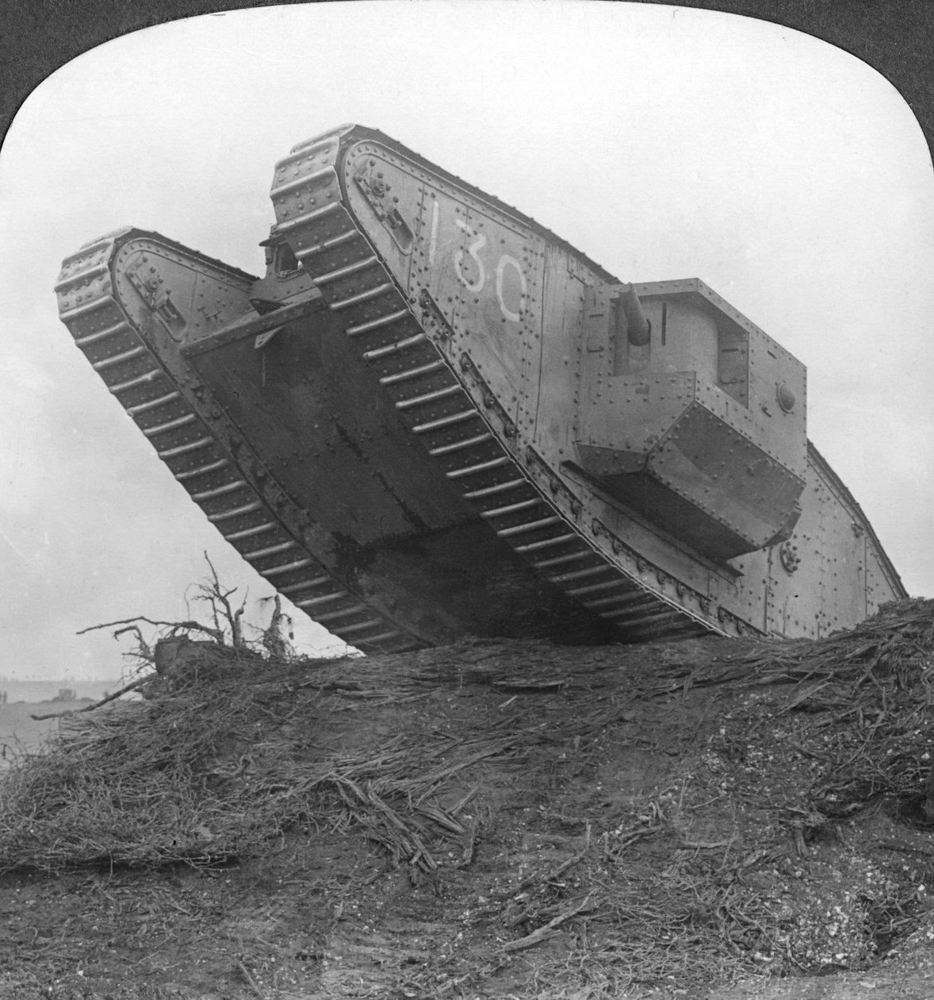
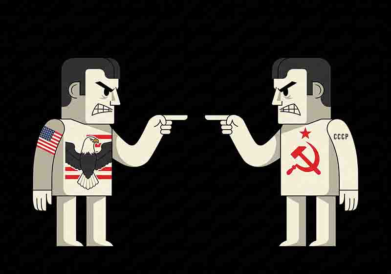
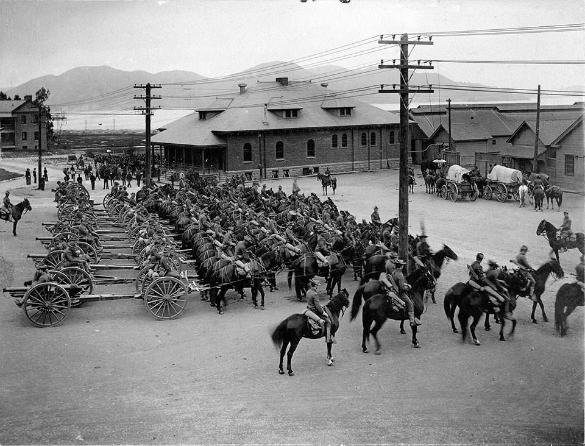
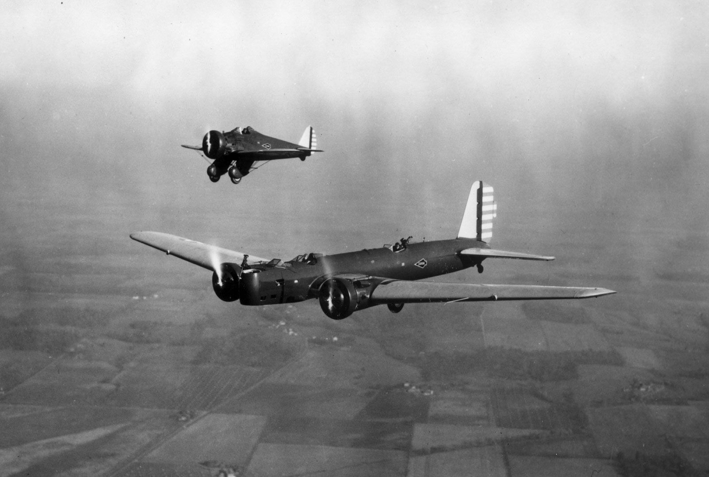

A modern hadviselés születése

A gépesítés első lépései

A gépesítés és a modern hadseregek kialakulása

A páncélosok, a légierő és a rakéták kora

Rakéták és technológiai verseny

Precíziós fegyverek és digitális rendszerek
A 20. század elején a világ hadseregei gyors átalakuláson mentek keresztül. A lovasság és a hagyományos gyalogság még meghatározó szerepet töltött be, de a géppuskák, a gyorstüzelő tüzérség és a belső égésű motorok már előrevetítették a modern hadviselés kialakulását. Az ipari termelés lehetővé tette, hogy a hadseregek korábban elképzelhetetlen mennyiségű fegyverhez és lőszerhez jussanak.
A gyalogság alapfegyverei közé a korszerű, ismétlő rendszerű puskák tartoztak. A német Gewehr 98, az orosz Mosin–Nagant és a brit Lee-Enfield nagy hatótávolságú, megbízható fegyverek voltak. A Maxim-géppuska és annak különböző változatai megmutatták, milyen pusztító lehet a folyamatos, gyors tüzelés. A korszerű tábori lövegek, például a francia 75 mm-es tábori ágyú, gyorsabb és pontosabb tüzérségi támogatást biztosítottak. A pisztolyok, például a német Luger P08, szintén fontos szerepet kaptak a tisztek és a katonák felszerelésében.
A repülés eközben még kísérleti szakaszban volt. A kezdeti repülőgépek felderítésre szolgáltak, de hamar kiderült, hogy a levegőből szerzett információ komoly előnyt jelenthet a szárazföldi csapatok számára.
A modern hadviselés alapjai már megszülettek: nagyipari fegyvergyártás, gépesítés és egyre hatékonyabb tűzerő.

A századforduló fegyverei a hagyományos hadviseléstől a gépesítés felé vezettek. A Mark IV a lövészárkok és a szögesdrót leküzdésére kialakított brit harckocsi volt.
A Mark IV a lövészárkok és a szögesdrót leküzdésére kialakított brit harckocsi volt.
1914-ben sok hadvezetés gyors győzelemre számított, ám a nyugati fronton hamar kialakult a lövészárkok hosszú rendszere. A géppuskák, a tüzérség és a szögesdrót rendkívül veszélyessé tették a nyílt terepen végrehajtott támadásokat. A hadseregeknek új módszereket kellett kidolgozniuk a védelmi állások áttörésére.
A britek 1916-ban vetették be először harckocsijaikat. A Mark I, majd a későbbi Mark IV lánctalpas kialakítása lehetővé tette az akadályok leküzdését, miközben páncélzatuk védelmet nyújtott bizonyos kézifegyverek ellen. A francia Renault FT forgatható toronnyal rendelkezett, amely a későbbi harckocsik egyik meghatározó kialakításává vált.
A gyalogság fegyverzetében a géppuskák mellett megjelentek a könnyű géppuskák, például a brit Lewis-géppuska, valamint a közelharcban használt kézigránátok és lángszórók. A háború végén megjelent a német MP 18 is, az egyik első széles körben alkalmazott géppisztoly, amely új irányt mutatott a gyalogsági fegyverek fejlődésében. A vegyi fegyverek alkalmazása újabb súlyos veszélyt jelentett: a klór, a foszgén és a mustárgáz ellen a gázálarcok fejlesztése vált létfontosságúvá.
A repülőgépek a háború kezdeti felderítő szerepétől eljutottak a géppuskával felszerelt vadászgépekig és a bombázókig. A német Fokker vadászgépek, a brit Sopwith Camel és a francia SPAD S.XIII a kor légi harcának jellegzetes típusai voltak. A légi fényképezés és a rádiózás fejlődése a felderítést és a tüzérségi célzást is segítette.
A tüzérségi megfigyelés, a telefonos kommunikáció, a rádió, a vasúti szállítás és az utánpótlás megszervezése legalább annyira fontos lett, mint maguk a fegyverek. A háború végére a haditechnika fejlődése alapjaiban változtatta meg a katonai gondolkodást.
A technológia önmagában nem szüntette meg a frontok merevségét, de megteremtette a későbbi gépesített hadviselés alapjait.
 A légi felderítésből néhány év alatt kialakult a vadász- és bombázórepülés.
A légi felderítésből néhány év alatt kialakult a vadász- és bombázórepülés.
Az első világháború után a hadseregek egyre nagyobb figyelmet fordítottak a gyors mozgásra és a fegyvernemek együttműködésére. A harckocsik mellett a teherautók, a motorkerékpárok és a páncélozott szállítójárművek is elterjedtek. A rádió lehetővé tette, hogy a mozgó alakulatok menet közben is kapcsolatban maradjanak egymással.
A gyalogsági fegyverek fejlesztése során egyre nagyobb szerepet kaptak az öntöltő puskák, a géppisztolyok és a könnyű géppuskák. A német MP 18 után több ország is megkezdte saját géppisztolyainak fejlesztését. Az amerikai Thompson géppisztoly és a szovjet PPD-sorozat jól példázta ezt az irányt. A cél a katonák tűzerejének növelése és a közelharcban való hatékonyabb alkalmazhatóság volt.
A harckocsik egyre változatosabb feladatokra készültek: megjelentek a könnyű, gyors felderítő és a nagyobb tűzerőre tervezett típusok. A német Panzer I és Panzer II, a szovjet T-26 és a gyors BT-sorozat a két világháború közötti fejlesztések példái voltak. A tapasztalatok megmutatták a páncélosok mozgékonyságának, rádiókapcsolatának és gyalogsággal való együttműködésének jelentőségét.
A repülőgépek szerkezete és teljesítménye szintén gyorsan fejlődött. A vászonborítású, kétfedelű gépeket fokozatosan felváltották a fémépítésű, zárt kabinos, egyfedelű repülőgépek. A légierő egyre inkább önálló haderőnemmé vált, amelyet vadász-, bombázó- és felderítő feladatokra egyaránt alkalmaztak.
A két világháború között kialakultak azok a gépesített hadseregek és légi hadviselési elvek, amelyek a második világháborúban teljesedtek ki.

A harckocsik és a repülőgépek fejlesztése a gyorsabb, mozgékonyabb hadviselés felé mutatott. A harckocsik és a repülőgépek fejlesztése a gyorsabb, mozgékonyabb hadviselés felé mutatott.
A harckocsik és a repülőgépek fejlesztése a gyorsabb, mozgékonyabb hadviselés felé mutatott.
A második világháborúban a páncélosok a szárazföldi hadviselés meghatározó eszközeivé váltak. A német Panzer III és Panzer IV, a szovjet T-34, valamint az amerikai M4 Sherman különböző megoldásokat képviseltek a mozgékonyság, a tűzerő és a gyárthatóság terén.
A német Tiger I erős páncélzatával és 88 mm-es lövegével vált ismertté. A Tiger II még nagyobb védelmet és erősebb löveget kapott, de hatalmas tömege és összetett szerkezete komoly logisztikai terhet jelentett. A Szovjetunió IS-2 nehézharckocsija 122 mm-es lövegével erődítmények és ellenséges páncélosok ellen is jelentős tűzerőt biztosított.
 A Tiger I, a T-34 és a Sherman jól szemléltetik a második világháború eltérő harckocsi-fejlesztési megközelítéseit.
A Tiger I, a T-34 és a Sherman jól szemléltetik a második világháború eltérő harckocsi-fejlesztési megközelítéseit.
 A Me 262 a sugárhajtású repülés első jelentős mérföldköve volt, új sebességi és technológiai lehetőségeket nyitva meg a katonai repülésben.
A Me 262 a sugárhajtású repülés első jelentős mérföldköve volt, új sebességi és technológiai lehetőségeket nyitva meg a katonai repülésben.
A második világháborúban a kézifegyverek jelentős változáson mentek keresztül. A hagyományos ismétlőpuskák mellett egyre elterjedtebbé váltak az öntöltő puskák és a géppisztolyok. A német MP 40, a szovjet PPSh-41 és az amerikai Thompson a korszak legismertebb géppisztolyai közé tartoztak. Az amerikai M1 Garand öntöltő puska nagyobb tűzgyorsaságot biztosított a hagyományos ismétlőpuskákhoz képest.
A háború végén Németországban megjelent a StG 44, amely a köztes lőszer és a szelektív tüzelés alkalmazásával a modern gépkarabélyok egyik fontos előfutárává vált. Ez a fegyverkategória később alapvetően meghatározta a gyalogsági kézifegyverek fejlődését.
A repülőgépek sebessége, hatótávolsága és fegyverzete gyorsan fejlődött. A Supermarine Spitfire, a Messerschmitt Bf 109 és a P-51 Mustang a vadászrepülés meghatározó típusai voltak. A Ju 87 zuhanóbombázó a közvetlen földi támogatás jellegzetes eszközévé vált, míg a B-17 és a Lancaster nagy hatótávolságú stratégiai bombázásra szolgált.
A háború végén megjelent a Messerschmitt Me 262, az első hadműveleti szolgálatba állított sugárhajtású vadászgép. A német V-1 repülő bomba és a V-2 ballisztikus rakéta új korszakot nyitott a nagy távolságú fegyverek fejlődésében. A háború végén bevetett atombombák pedig megmutatták, hogy a technológiai fejlődés pusztító ereje új szintre lépett.
A második világháború a tömeges gépesítés, a légi fölény és az összehangolt hadműveletek korszakává vált.
 A Me 262 a sugárhajtású repülés első jelentős mérföldköve volt, új sebességi és technológiai lehetőségeket nyitva meg a katonai repülésben.
A Me 262 a sugárhajtású repülés első jelentős mérföldköve volt, új sebességi és technológiai lehetőségeket nyitva meg a katonai repülésben.
A második világháború után az Egyesült Államok és a Szovjetunió közötti szembenállás felgyorsította a fegyverkezést. A nukleáris fegyverek és a nagy hatótávolságú bombázók megjelenésével a katonai fölény már nem csupán a csapatok számától függött. Egy nagyhatalmi konfliktus akár mindkét fél számára katasztrofális következményekkel járhatott.
Az interkontinentális ballisztikus rakéták, például az amerikai Atlas és Minuteman, illetve a szovjet R-7 család, több ezer kilométeres távolságban is képesek voltak célpontokat elérni.
A háború utáni időszakban a gépkarabélyok fokozatosan a gyalogság alapfegyvereivé váltak. A szovjet AK-47, amelyet Mihail Kalasnyikov tervei alapján fejlesztettek ki, 1949-ben rendszeresítették. Egyszerű szerkezete, megbízhatósága és könnyű kezelhetősége miatt világszerte elterjedt. Az Egyesült Államok később az M14, majd az M16 puskával képviselt egy másik fejlesztési irányt. A kisebb kaliberű, nagy kezdősebességű lőszerek és a könnyebb fegyverek egyre fontosabbá váltak.
A vadászrepülőgépek egyre gyorsabbá váltak. Az amerikai F-86 Sabre és a szovjet MiG-15 a koreai háborúban már a sugárhajtású légi harc korszakát képviselte. Később az F-4 Phantom II, a MiG-21 és a MiG-29 különböző generációkon keresztül mutatták be a sebesség, a radar és az irányított rakéták növekvő jelentőségét.
 A hidegháború gyalogsága egyre korszerűbb kézifegyvereket és felszereléseket használt.
A hidegháború gyalogsága egyre korszerűbb kézifegyvereket és felszereléseket használt.
 A sugárhajtású vadászgépek fejlődése a sebesség, a radar és az irányított rakéták terén zajló versenyt mutatta.
A sugárhajtású vadászgépek fejlődése a sebesség, a radar és az irányított rakéták terén zajló versenyt mutatta.
 A T-55, T-72 és T-80 a szovjet harckocsifejlesztés meghatározó típusai voltak.
A T-55, T-72 és T-80 a szovjet harckocsifejlesztés meghatározó típusai voltak.
A harckocsiknál megjelentek a korszerű stabilizált lövegek, a fejlettebb páncélzatok és az éjjellátó berendezések. A szovjet T-55, T-72 és T-80, valamint a nyugati M48 Patton, M60 és Leopard 1 a hidegháború különböző szakaszainak fontos típusai voltak. Az amerikai M1 Abrams és a német Leopard 2 a korszak végén új szintre emelte a tűzvezetést és a védelmet.
A radarok, a műholdak és a felderítő repülőgépek, például az U-2 és az SR-71, egyre több információt szolgáltattak az ellenfél tevékenységéről. Az elektronikai zavarás és a kommunikáció védelme szintén a modern hadviselés fontos területeivé vált.
A hidegháborúban a technológiai fölény már a felderítés, a kommunikáció és a stratégiai elrettentés összetett rendszerét jelentette.
A hidegháború lezárását követően a hadseregek egyre nagyobb hangsúlyt helyeztek a digitális technológiára, a precíziós fegyverekre és a különböző haderőnemek közötti együttműködésre. A műholdas navigáció és a korszerű kommunikáció lehetővé tette, hogy a katonai egységek pontosabban meghatározzák helyzetüket, és gyorsabban osszanak meg információkat.
A hidegháború után a már elterjedt gépkarabélyok továbbfejlesztett változatai mellett új fegyvercsaládok is megjelentek. Az amerikai M4 karabély az M16 rövidebb változataként terjedt el, míg a német G36 és a belga FN SCAR korszerű, moduláris kialakítást képviselt. A modern kézifegyvereknél egyre nagyobb szerepet kaptak a könnyű anyagok, az optikai irányzékok, a lézeres célmegjelölők és az éjjellátó eszközök.
Az F-16 Fighting Falcon és az F/A-18 Hornet a többfeladatú harci repülőgépek elterjedését jelképezte. A lopakodó kialakítás új irányt adott a fejlesztéseknek: az amerikai F-117 csökkentett radarészlelhetőséggel készült, az F-22 pedig már a légi fölény, a fejlett érzékelők és a lopakodó technológia kombinációját képviselte.
Az európai fejlesztések közül a Eurofighter Typhoon és a francia Rafale a korszerű érzékelőrendszerek, a nagy teljesítményű hajtóművek és a többfeladatú alkalmazás példái. A pilóta nélküli repülőeszközök szintén egyre fontosabbá váltak a felderítésben.
 Az amerikai vadászgépek fejlődését a lopakodó kialakítás, a fejlett radarok és az egyre szorosabban összekapcsolt fedélzeti rendszerek határozzák meg.
Az amerikai vadászgépek fejlődését a lopakodó kialakítás, a fejlett radarok és az egyre szorosabban összekapcsolt fedélzeti rendszerek határozzák meg.
 Az amerikai vadászgépek fejlődését a lopakodó kialakítás, a fejlett radarok és az egyre szorosabban összekapcsolt fedélzeti rendszerek határozzák meg.
Az amerikai vadászgépek fejlődését a lopakodó kialakítás, a fejlett radarok és az egyre szorosabban összekapcsolt fedélzeti rendszerek határozzák meg.
 A különböző nemzetek modern harckocsijai eltérő megoldásokkal ötvözik a tűzerőt, a mozgékonyságot és a páncélvédelmet.
A különböző nemzetek modern harckocsijai eltérő megoldásokkal ötvözik a tűzerőt, a mozgékonyságot és a páncélvédelmet.
 A különböző nemzetek modern harckocsijai eltérő megoldásokkal ötvözik a tűzerőt, a mozgékonyságot és a páncélvédelmet.
A különböző nemzetek modern harckocsijai eltérő megoldásokkal ötvözik a tűzerőt, a mozgékonyságot és a páncélvédelmet.
A precíziós irányítású bombák és rakéták lehetővé tették, hogy a támadásoknál egyre nagyobb szerepet kapjon a célpont pontos azonosítása és a fegyver irányítása. A cirkálórakéták nagy távolságból is képesek voltak célpontok ellen bevethetővé válni, míg a hordozható légvédelmi rakéták és páncéltörő fegyverek a kisebb egységek harci képességeit növelték.
A szárazföldi erőkben az M1 Abrams és a Leopard 2 folyamatosan továbbfejlesztett változatai, valamint a szovjet eredetű T-72 és T-80 utódai a páncélvédelem, a célfelderítés és a tűzvezetés fejlődését mutatták. A gyalogság felszerelésében megjelentek a digitális rádiók, a korszerű éjjellátók és a fejlettebb egyéni védőeszközök.
A pilóta nélküli repülőeszközök, például az MQ-1 Predator, a felderítés mellett később fegyverhordozó feladatokat is kaptak. A műholdas felderítés, a digitális térképek és az összekapcsolt kommunikációs rendszerek segítették a parancsnokokat a harctéri helyzet gyorsabb megértésében.
A kiberhadviselés és az elektronikai zavarás új frontot nyitott a technológiai versenyben.
A 2000-es évekre a haditechnika egyik legfontosabb erőforrásává az információ vált: annak megszerzése, feldolgozása és gyors továbbítása.